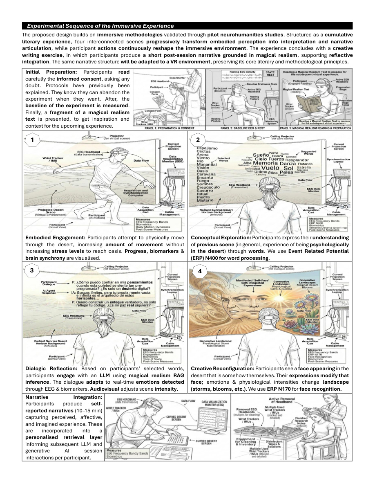
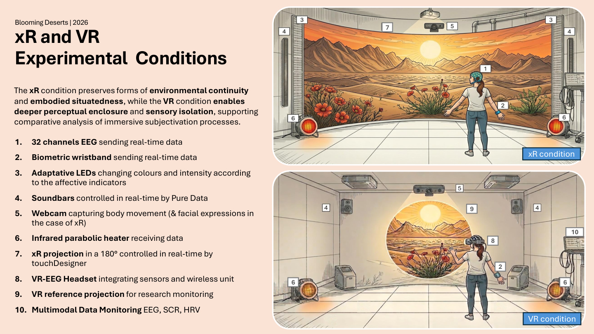
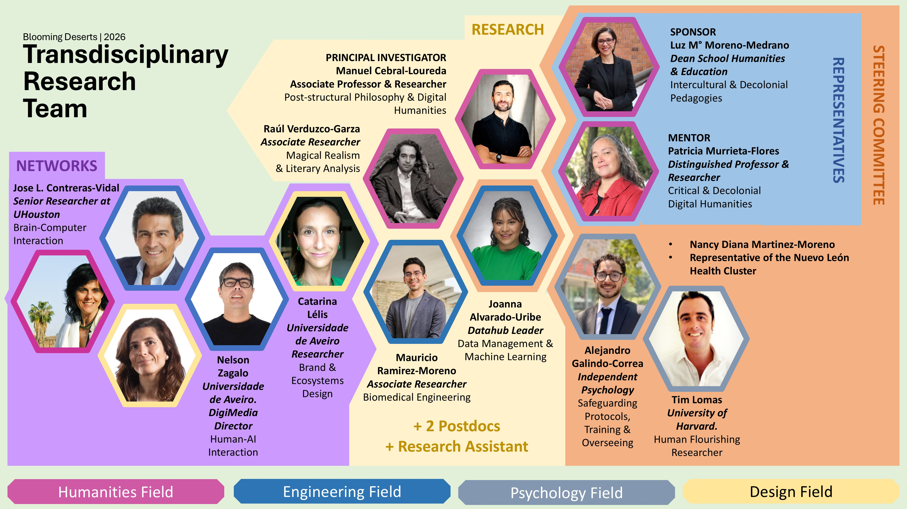

Magical realism
A literary mode where the extraordinary inhabits everyday reality. Here, it becomes a method for exploring ambiguity, metaphor, memory, and culturally situated forms of perception.
A Neurohumanities Research Project · Northern Mexico
Magical Realism and the Neurohumanities of the Subjective Experience in Northern Mexico
What can immersive literary experiences reveal about how we feel, interpret, and make meaning of ourselves?
Explore the projectThe project
Blooming Deserts explores magical realism as a culturally situated way of approaching subjective experience. Bringing literary inquiry into dialogue with neuroscience, immersive technologies, and generative AI, the project asks how people make sense of affect, distress, and selfhood through experiences that are at once embodied, narrative, and culturally meaningful.
Set within a Neurohumanities Laboratory, the research uses technologies not simply to monitor or optimise behaviour, but as perceptual mediators that can help make otherwise difficult-to-articulate dimensions of experience available for reflection. The project is research-oriented rather than a clinical intervention.
A central proposition
The desert of Northern Mexico is approached as both a culturally significant landscape and a metaphor for the contemporary psyche: a place of immensity, uncertainty, introspection, and latent vitality. In this immersive environment, dawn and dusk, storm and calm, withering and blooming become elements through which affect and interpretation can take shape.
01 / Research vision
The project brings together distinct ways of understanding experience without reducing one to another.
A literary mode where the extraordinary inhabits everyday reality. Here, it becomes a method for exploring ambiguity, metaphor, memory, and culturally situated forms of perception.
Adaptive audiovisual and spatial environments invite participants to move through a symbolic desert, articulate interpretations, and encounter changing narrative elements.
Neurophysiological and biometric signals are interpreted alongside self-reports, interviews, and participant-generated narratives to develop a richer account of subjective experience.
02 / Research questions
The inquiry focuses on how immersive, adaptive literary environments may reshape attention, affect, interpretation, and self-expression.
How do immersive and adaptive literary environments grounded in magical realism reshape the experience, interpretation, and articulation of affect and distress?
What forms of knowledge about subjective experience emerge when first-person accounts are brought into dialogue with neurophysiological measures through culturally situated literary frameworks?
How do the narrative and affective logics of magical realism reconfigure embodiment, agency, and subjectivation within immersive environments?
Under what ethical, cultural, and epistemic conditions can adaptive neurotechnological systems support non-reductive understandings of self-relation and wellbeing?
03 / Immersive experience
The planned experience follows a cumulative sequence: embodied exploration gives way to interpretation, dialogue, and creative reconfiguration. The design will be adapted across two immersive conditions.
Participants move through the desert environment. The landscape responds to movement and physiological indicators, making the relationship between body and setting perceptible.
Participants select words to articulate their understanding of the experience. Language becomes a bridge between embodied sensation and reflective interpretation.
A literary dialogue mediated by a locally curated generative AI system draws on magical realism, participant-selected words, and carefully designed interaction guidelines.
A face-like presence emerges within the landscape. Its expression and the surrounding environment change, inviting reflection on identity, affect, and relations between human and nature.

Condition A
A 180° projection-based environment preserves a stronger continuity between the participant’s physical surroundings and the mediated landscape.
Condition B
A fully immersive environment enables a different degree of perceptual enclosure and sensory isolation for comparison with the xR condition.

04 / Research methodology
The project integrates three analytical layers. Their value lies not in any single measure, but in the interpretation made possible when different perspectives are brought together.

A three-layer analytical architecture integrating neurophysiological markers, structured self-reports, and literary-hermeneutic interpretation. The innovation is not the use of EEG, questionnaires, or literary interpretation in isolation. It is the analytical architecture that allows these three perspectives to converge into a neurohumanities interpretation of subjective experience.
05 / Adaptive AI
The project proposes a humanities-led retrieval-augmented generation (RAG) approach for literary interaction. Rather than training a domain-specific generative model, it will use a curated corpus and interpretive guidelines to support situated dialogue within the immersive environment.
Particular attention will be paid to ambiguity, bias, discomfort, and affective dissonance. These are not treated simply as errors to erase, but as tensions to document and critically interpret, with safeguards designed to prevent harmful or confusing interactions.

06 / Ethics & safeguarding
The project is not conceived as a clinical intervention. Its research design nevertheless includes screening, informed consent, psychological oversight, and referral pathways where needed.
Participation is voluntary. Participants are informed about the immersive experience, physiological measures, AI-mediated dialogue, data handling, potential risks, available support, and their right to withdraw without consequence. Sessions may be paused or stopped if discomfort or distress arises.
Enrollment and screening measures help inform suitability and identify when additional assessment or support may be appropriate.
A qualified psychology professional oversees safeguarding procedures, staff preparation, distress management, and referral pathways.
The proposed protocol includes reflective interviews, a group closing session, and follow-up assessments three and six months after the final session.

The information on this page describes the research protocol, not a clinical service or a substitute for professional care.
07 / Expected contributions
A culturally situated framework for studying introspection, affect, and subjective meaning-making.
An openly documented research protocol connecting neurophysiological, behavioural, and first-person accounts.
A modular literary environment integrating visual, auditory, spatial, and physiological components.
A traceable RAG approach for adaptive literary interaction, guided by aesthetic and ethical principles.
Research-informed guidance for future culturally situated immersive wellbeing studies and applications.
08 / Research team
The project brings together expertise across humanities, engineering, psychology, data science, and design.

Principal Investigator · Digital Humanities & Post-structural Philosophy
Associate Researcher · Magical Realism & Literary Analysis
Associate Researcher · Biomedical Engineering
DataHub · Data Management & Machine Learning
University of Aveiro · Brand & Ecosystems Design
Professional oversight, training, and participant support protocols
The source materials also identify a steering committee and wider research networks. This public-facing overview focuses on the roles most directly connected to the research and should be reviewed by the project team before publication.
Blooming Deserts
Magical realism · Neurohumanities · Northern Mexico